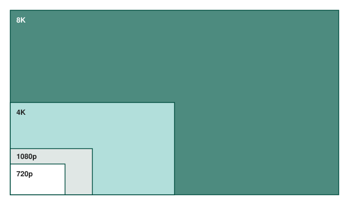

Resolutie en framerate
In onderstaand rekenvoorbeeld staan we even stil bij die grote hoeveelheden data die door de GPU verwerkt moeten worden.
Laat ons even uitgaan van de volgende waarden:
Full HD (1080p) = 1920 pixels horizontaal x 1080 pixels verticaal => 2 073 600 pixels in het totaal en het spreekt voor zich dat hoe hoger je de resolutie maakt, hoe meer pixels je nodig hebt.
In de praktijk wordt meestal gekozen voor Full HD. In de figuur zie je meteen wat voor impact 4K schermen hebben op het aantal pixels.

Iedere pixel moet een bepaalde kleur kunnen voorstellen. In het slechtste geval hebben we te maken met een zwart / wit scherm. In die situatie hebben we 1 bit nodig per pixel (0= wit, 1 = zwart).
Hoe meer kleuren je wil zien, hoe meer bits per pixel je nodig hebt om de kleuren voor te stellen. Meestal worden 24 bits per pixel gebruikt om 'ware kleuren' voor te stellen. Hiermee kan je 2^24 = 16,7 miljoen verschillende kleuren afbeelden per pixel.
Als je het volledig scherm wil 'kleuren' dan komt dit neer op 2 073 600 pixels * 24 bits = 49 766 400 bits. Ongeveer 50 miljoen bits ~= 50 Mbit ~= 6,25 MB.
Een mens heeft ongeveer 25 beelden per seconde nodig om dit te aanzien als een vloeiend geheel. We noemen dit ook wel de framerate. Rekening houdend hiermee moet de GPU dus minstens 25 * 6,25 = 156,25 MB per seconde genereren. In de praktijk is dit heel vaak het dubbele omdat we als framerate vaak 50 Hz nemen.
Daarnaast kan het zijn dat er meerdere schermen aangesloten worden. Ook dit verhoogt de nodige data die per seconde gegenereerd moet worden.
Het spreekt voor zich dat de framerate, de grootte van de resolutie en het aantal kleuren een invloed hebben op de benodigde rekenkracht van de GPU. Ook de berekeningen die gemaakt moeten worden bij spellen en CAD/CAM toepassingen hebben een grote impact op de GPU.
Moderne grafische kaarten worden aangesloten via PCI Express. Deze krijgen een rechtstreekse link met de processor en moeten niet langs de Platform Controller Hub (PCH).
In het blokschema hieronder zie je dat verschil: de grafische kaart zit met een x16 slot rechtstreeks aan de processor, terwijl USB, SATA, het netwerk en de sloten voor uitbreidingskaarten aan de PCH hangen, die op zijn beurt met een eigen verbinding aan de processor vastzit. In diezelfde processor zit ook de grafische kern waarmee je het zonder externe kaart moet doen. Op de foto eronder is dat x16 slot met een pijl aangeduid.
![Blokschema van een moederbord van na 2011. Bovenaan in het midden de processor, met de grafische kern erin getekend. Links ervan hangt over PCI Express x16 het slot voor de grafische kaart rechtstreeks aan de processor, rechts ervan twee blokken werkgeheugen (DDR4). Onder de processor hangt over een eigen verbinding de PCH, de Platform Controller Hub, met daarin USB, SATA, netwerk en firmwarechip. Links van de PCH hangen over PCI Express de sloten voor uitbreidingskaarten. De grafische kaart gaat dus niet langs de PCH, de uitbreidingskaarten wel.](../../../../img/syllabus-15-grafische-kaart-op-pci-express.svg)